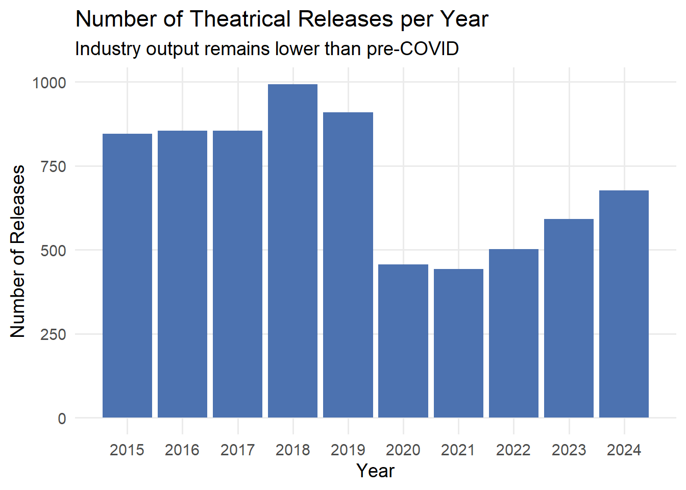
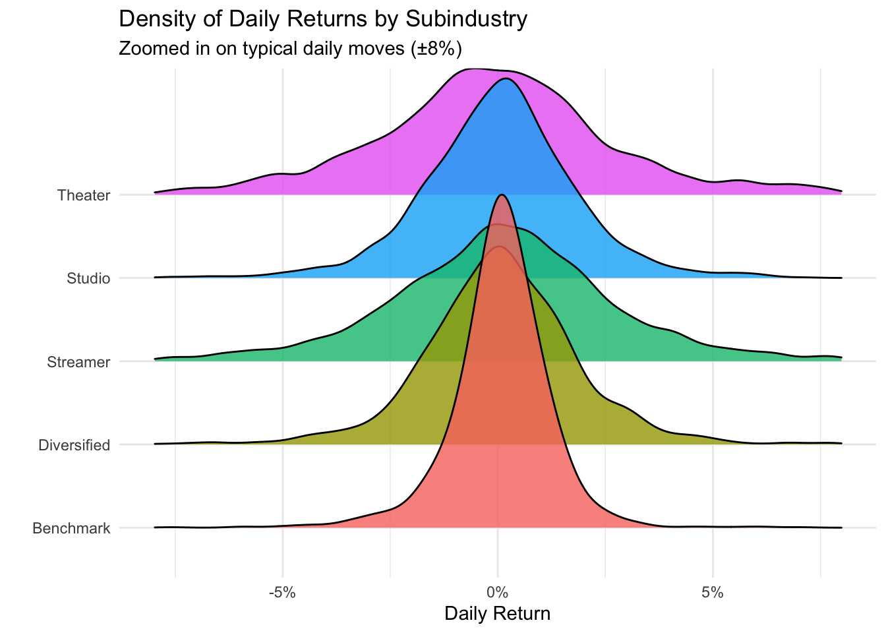

#load the three datasets and tidyverse packagelibrary(tidyverse)### --- Load & clean Media data ---media <-read_csv("data/movie_media_clean.csv", show_col_types =FALSE) |>mutate(Date =as.Date(Date))# --- Load & clean Sector ETFs ---sectors <-read_csv("data/sector_etfs_clean.csv", show_col_types =FALSE) |>mutate(Date =as.Date(Date))# --- Load Box Office Data ---box_office <-read_csv("data/box_office.csv", show_col_types =FALSE)# use mutate(Date = ...) here only if box_office contains a date column
3.0.1 1. The number of theatre releases and box office revenue still fall flat compared to pre-COVID levels
p_box2 <-ggplot(box_office, aes(Year, Releases)) +geom_col(fill ="#4C72B0") +labs(title ="Number of Theatrical Releases per Year",subtitle ="Industry output collapsed during COVID and remains structurally lower",x ="Year",y ="Number of releases" ) +theme_minimal()p_box2

locations of movie theatres by state? 2019 and then 2024? can count numbers and use map for % of decrease? https://investor.amctheatres.com/sec-filings/all-sec-filings/content/0001411579-25-000042/amc-20241231x10k.htm https://investor.amctheatres.com/sec-filings/all-sec-filings/content/0001411579-20-000027/amc-20191231x10k.htm
library(ggridges)# 2. Build subindustry daily returns (this defines sub_daily) ----sub_daily <- media |>filter(!is.na(return)) |>group_by(Date, SubIndustry) |>summarize(sub_ret =mean(return, na.rm =TRUE),.groups ="drop" )# 3. Ridgeline plot, zoomed around typical moves (e.g. -8% to +8%) ----ggplot(sub_daily, aes(x = sub_ret, y = SubIndustry, fill = SubIndustry)) +geom_density_ridges(alpha =0.8, scale =4) +scale_x_continuous(labels = scales::percent,limits =c(-0.08, 0.08) # zoom in: change to c(-0.05, 0.05) if you want tighter ) +labs(title ="Density of Daily Returns by Subindustry",subtitle ="Zoomed in on typical daily moves (±8%)",x ="Daily Return",y ="" ) +theme_minimal() +theme(legend.position ="none")

3.0.4 4. Netflix behaves like a tech company & AMC theatre underperforms
Code
# 1) Movie industry equal-weight price index (use Adj_Close, not rebased)movie_index <- media |>filter(SubIndustry !="Benchmark") |>group_by(Date) |>summarize(movie_price =mean(Adj_Close, na.rm =TRUE),.groups ="drop" )# 2) S&P 500sp <- media |>filter(Ticker =="^GSPC") |>select(Date, sp_price = Adj_Close)# 3) Netflixnflx <- media |>filter(Ticker =="NFLX") |>select(Date, nflx_price = Adj_Close)# 4) Align dates and rebase all three to 1 at common startall3 <- movie_index |>inner_join(sp, by ="Date") |>inner_join(nflx, by ="Date") |>arrange(Date)base_movie <-first(all3$movie_price)base_sp <-first(all3$sp_price)base_nflx <-first(all3$nflx_price)relative_long <- all3 |>mutate(`Movie Industry`= movie_price / base_movie,`S&P 500`= sp_price / base_sp,`Netflix`= nflx_price / base_nflx ) |>select(Date, `Movie Industry`, `S&P 500`, `Netflix`) |>pivot_longer(cols =-Date,names_to ="Series",values_to ="rebased" )ggplot(relative_long, aes(Date, rebased, color = Series)) +geom_line(linewidth =1) +scale_y_log10() +labs(title ="Netflix vs Movie Industry vs S&P 500 (Rebased)",subtitle ="Netflix tracks the broad market more closely than the struggling movie industry",x ="Date",y ="Rebased Price (log scale)",color ="" ) +theme_minimal()
alluvial diagram of movies distributed in theaters vs. streaming? compare netflix revenue to other companies?